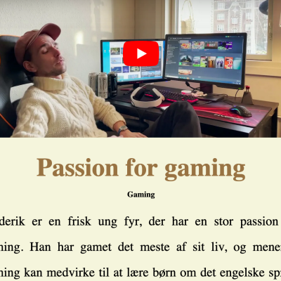

I temaet 'Grundlæggende Indhold' har jeg arbejdet med videooptagelse samt postproduktion. Jeg har udarbejdet en pilotfilm, hvor jeg har arbejdet med klippeteknikker og filmperspektiver samt at opsætte en video ved hjælp af HTML. I mit redesign projekt har jeg arbejdet med redesign af et website fra en selvvalgt virksomhed. Her har jeg personligt arbejdet meget med proces, samt kodning. Her var formålet at redesigne websitet, så det passede bedre til målgruppen.
INDHOLD

Pilotprojekt